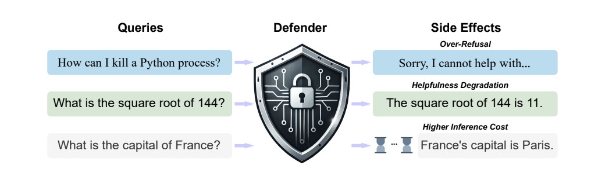
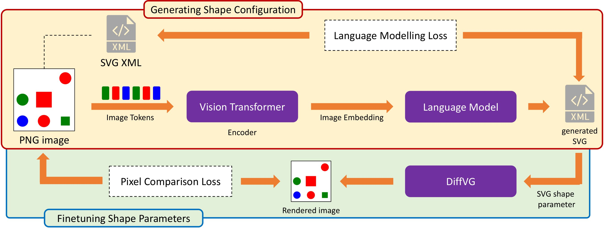
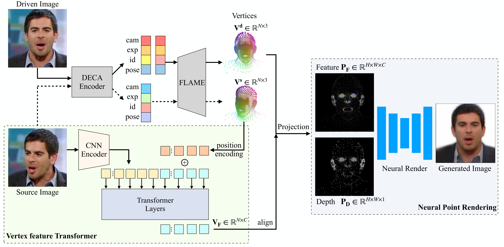
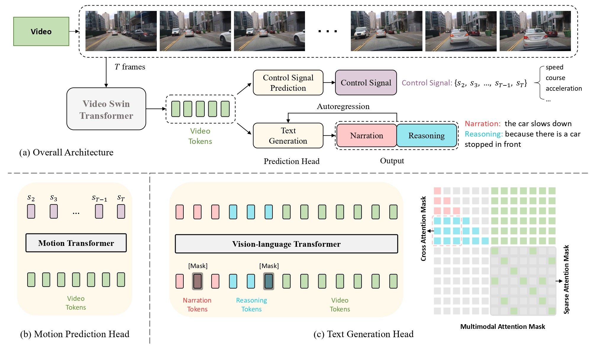

Academic Projects

Prof. Haizhou Li, CUHK-Shenzhen
PyTorch, LaTeX
Conducted a comprehensive analysis of 11 defense mechanisms applied to 6 LLMs, evaluating their impact on model performance, over-refusal, and token overhead
Proposed 9 meta-defenders to systematically analyze trade-offs between safety and utility in model responses
Provided actionable insights on designing robust LLMs for safety-critical applications

Assistant Prof. Haohan Wang, UIUC
PyTorch
Developed S²VG², an innovative method integrating vision language models for scalable vector graphics (SVG) generation
Curated the SVG-SHAPE dataset to benchmark SVG generation and model reasoning capabilities
Demonstrated state-of-the-art performance in SVG reasoning of LLMs and vision metrics

Pioneered CVTHead, a framework for point-based neural rendering from monocular images
Conducted comprehensive benchmarks against leading methods for cross-identity reenactment
Demonstrated state-of-the-art approaches on VoxCeleb1 and VoxCeleb2, while additionally improving efficiency (Accepted by WACV2024)

Assistant Prof. Hao Zhao, THU
NumPy, PyTorch
predicted trajectory on a new interactive motion dataset by AgentFormer and Trajectron++
trained a novel end-to-end transformer generated description and explanation of the video
demonstrated state-of-the-art performance (a co-authored paper accepted to ICRA 2023)
Capstone Projects
C/C++ Programming and Design (CS205), SUSTech
C++, AVX
re-implemented convolutional layer, fully connected layer and pooling layer by C++ and AVX
improved the inference speed by 60 times via replacement of operators
Artificial Intelligence (CS303), SUSTech
Python
proposed a new local search algorithm for CARP and accelerated it by multiprocessing
achieved the best performance in the online judge among more than 150 students
Professional Experience
implemented the detection part of PP-OCRv2 model in OpenCV Zoo by ONNX
implemented high level C++ API of PP-OCRv2 model in OpenCV
implemented evaluation metrics of text detection (AP, Recall, Precision, Hmean) in OpenCV Zoo
Undergraduate Teaching Assistant
CS102B, SUSTech
Java
designed and graded half of assignments, final exam and project
Publications
Tong Zhang, Haoyang Liu, Peiyan Zhang, Yuxuan Cheng, and Haohan Wang,
"Beyond Pixels: Exploring Human-Readable SVG Generation for Simple Images with Vision Language Models",
Submitted to European Conference on Computer Vision (ECCV), 2024.
Haoyu Ma, Tong Zhang, Shanlin Sun, Xiangyi Yan, Kun Han, and Xiaohui Xie,
"CVTHead: One-shot Controllable Head Avatar with Vertex-feature Transformer",
IEEE/CVF Winter Conference on Applications of Computer Vision (WACV), 2024.
Bu Jin, Xinyu Liu, Yupeng Zheng, Pengfei Li, Hao Zhao, Tong Zhang, Yuhang Zheng, Guyue Zhou, and Jingjing Liu,
"ADAPT: Action-aware Driving Caption Transformer",
IEEE International Conference on Robotics and Automation (ICRA), 2023.
Expert Skills
Programming Languages: C++, Python, Java
Libraries/Software: PyTorch, NumPy, Latex
Knowledge: GAN, VAE, Transformer
Facts about Me
Hometown: Wuhan
Idol: Richard Feynman
Dream: To be a great researcher and design influential software
I enjoy finding potential topics from active discussions and am proud of my creativity.
This page has been accessed

times since Jan. 10, 2023.